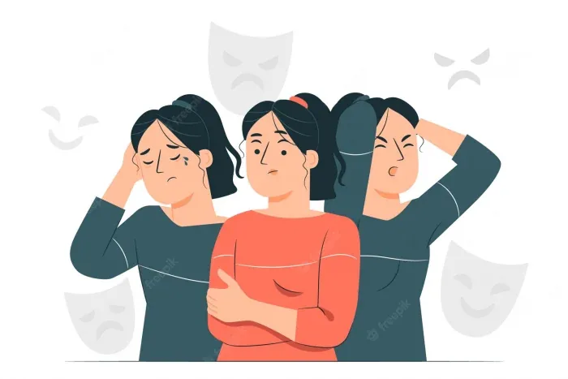

Dual Diagnosis Treatment by Psychiatrist in Delhi
Remember that blue-eyed guy staying nearby Merlin Garden!! I and my parents have always seen him with a bottle of liquor, even few days back I have seen him buying whisky from the Liquor shop counter early in the morning while I was doing my rounds of jogging. Yesterday, Johny flashed the news that he has seen the same guy with his parents at Dr Gorav Gupta’s clinic for treating schizophrenia he is suffering from. Poor Guy!! Don’t be surprised!! Millions of men and women round the world including Delhi suffer from dual diagnosis. Yes, Dual Diagnosis is a term used to describe when a person has a mental health disorder and a substance use disorder simultaneously just like that blue-eyed person. At times, more than one substance use disorder or mental health condition may be involved, further complicating a person’s life. Some psychiatrist in Delhi call it co-occurring disorder and co-morbidity too. Mental health disorders include anxiety, depression, schizophrenia, bipolar disorder and other mental conditions while substance use disorder involve alcohol, drugs, marijuana or addictive substances and the interactions of the two conditions can worsen both. Dual diagnosis psychiatrist usually go for medication, behavioural therapy, support groups or in-patient care treatment depending on the condition of the patient.

Symptoms of Dual Diagnosis
Symptoms of dual diagnosis depend on which substances and mental health disorders are involved and thus may vary depending on different combinations of dual diagnoses.
Symptoms of mental health disorder:
Common symptoms of mental health disorder for dual diagnosis are listed below:
- Excessive tension and worries
- Trouble concentrating
- Impaired judgment and impulsivity
- Nausea, trembling, or dizziness
- Insomnia
- Suicidal thoughts
Symptoms of substance use disorder:
Common symptoms of substance use disorder for dual diagnosis are listed below:
- Difficulty maintaining focus
- Withdrawal from family and friends
- Engaging in risky activities
- Developing a tall resistance for the substance
- Sudden changes in behaviour
Why do mental disorders and substance use disorder occur together?
After years of study and research, dual diagnosis psychiatrist have identified three possibilities for occurrence of mental disorders and substance use disorders:
- Common risk factors that contribute to occurrence of dual diagnosis include genes, trauma, and stress.
- Mental disorders may contribute to substance use and this may cause substance use disorders. For instance, people with mental disorders may start consuming alcohol or drugs to feel better. This is called self-medication and this may in turn may change the brain to make it more likely to be substance addicted.
- Substance use and addiction may contribute to cause mental disorders. Substance use may trigger changes to your brain’s structure and function leading to development of a mental disorder.
Dual Diagnosis Treatment
Treatment offered by Psychiatrist in Delhi for dual diagnosis include treatment for mental health condition and substance use disorder at the same time. Dual diagnosis psychiatrist offering dual diagnosis treatment prescribe medication, behavioural therapy, support groups or in-patient care depending on the condition of the patient.
Medication
Most dual diagnosis psychiatrist prescribe bupropion for the treatment of depression (Wellbutrin) and for nicotine dependence (Zyban). Some of these drugs help alleviate the symptoms of both of the conditions of a dual diagnosis.
Behavioural therapy
Dual diagnosis psychiatrist offer the following types of behavioural therapies to treat co-occurring disorders:
Cognitive behavioural therapy (CBT):In this therapy, psychiatrist in Delhi teach their patientshow to cope with and change ineffective patterns of thinking.
Dialectical behavioural therapy (DBT):This therapy is applied by psychiatrist in Delhi to reduce self-harm behaviours in patients which may include cutting and suicidal thoughts or actions.
Support Groups
These are specially trained people or people who have gone through the same dual diagnosis experience sometime in their lives. They offer the required emotional and social support a patient needs to maintain sobriety. Sometimes they also offer tips on how to deal with everyday challenges.
In-patient care
If a patient is experiencing a dependent pattern of substance use along with a mental health condition, dual diagnosis psychiatrist suggest to get admitted in a dual diagnosis treatment centre which offer the required medical and mental health care including medication, therapy and support.
Benefits of Dual Diagnosis Treatment
The right dual diagnosis treatment offered by dual diagnosis psychiatrist involves recognizing a patient’s addiction symptoms, correctly diagnosing his/ her mental health conditions, and tailoring his/ her treatment plan accordingly. The common benefits of dual diagnosis treatment are listed below:
Improved Quality of Life: Dual diagnosis psychiatrist simultaneously help their patients manage their mental health issues and addiction symptoms. Addressing both simultaneously instead of treating them one at a time can help individuals get the most out of life. When Psychiatrist in Delhi suggest to admit their patients to get admitted to addiction treatment centre, they receive comprehensive care that considers all their needs.
Reduced Relapse Rates: Psychiatrist in Delhi offering dual diagnosis treatment helps their patients understand the connection between addiction and depression or other mental health issues and by addressing both, these dual diagnosis psychiatrists reduces the rates of relapse and thus help individuals stay on track with their recovery plan.
Increased Motivation: Dual diagnosis psychiatrist offering treatment for dual diagnosis in a comprehensive manner which help increase the motivation of their patients to conquer their mental health conditions and addiction issues. This type of treatment is beneficial for those who struggle with hopelessness or low self-esteem.
More effective treatment: Dual diagnosis treatment offered by Psychiatrist in Delhi addresses underlying causes rather than symptoms of the illness and thus often leads to longer-lasting results and best chance of success in recovery.
Better preparation for Life after treatment: Dual diagnosis treatment offered by Psychiatrist in Delhi don’t end after patients have completed their treatment regimen. Dual diagnosis psychiatrist offer their patients get to 12-step programs and back bunches to preserve temperance and avoid backslide into old patterns related with either condition.
Ways to reduce chances of Dual Diagnosis
Dual diagnosis is a brain disease and thus cannot be prevented but the risks can always be reduced by:
- Learning about biological family history.
- Controlling the amount of alcohol consumption.
- Talking to the right healthcare provider.
Though dual diagnosis is difficult to be identified along with the signs and symptoms vary depending upon both the mental health problem and the type of substance being abused, once detected its treatment should be started immediately. Like other mental illness, recovery from dual diagnosis takes time and thus persistence is the key to success.